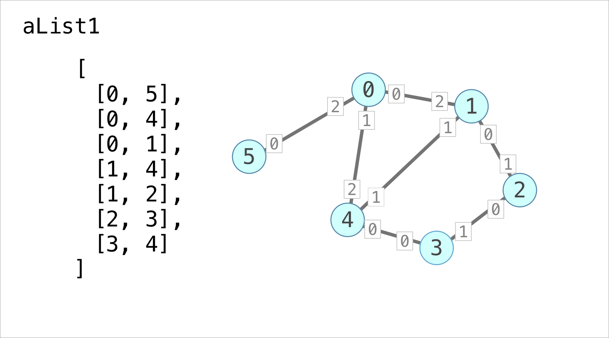
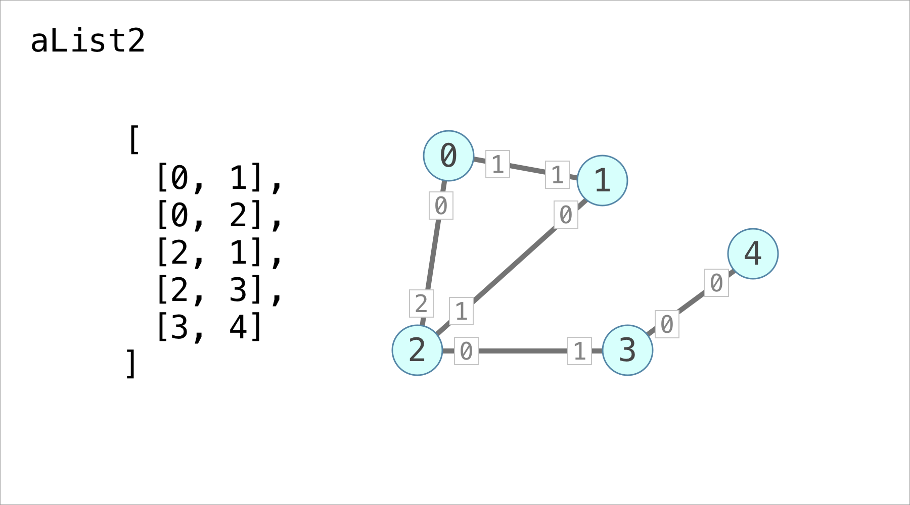
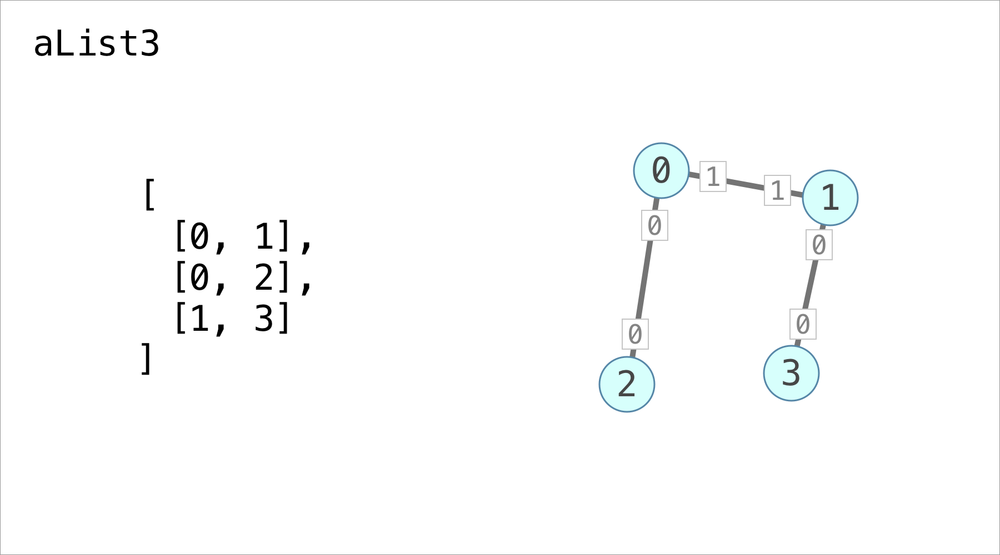
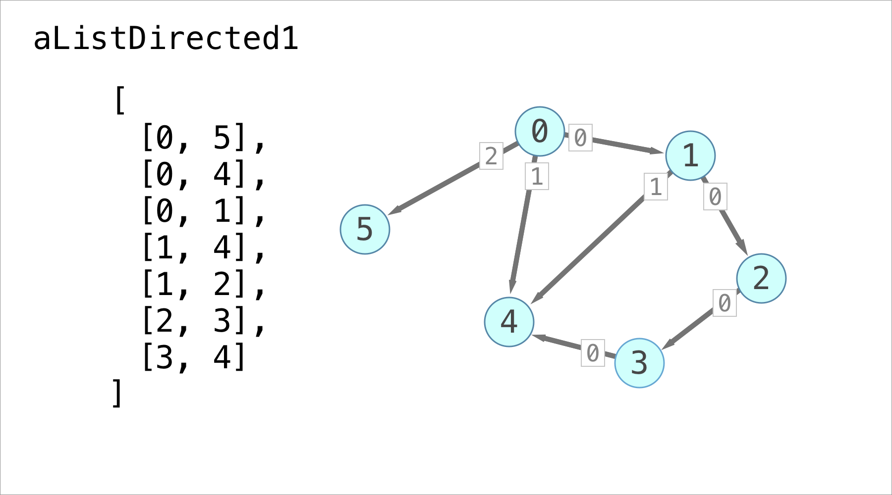
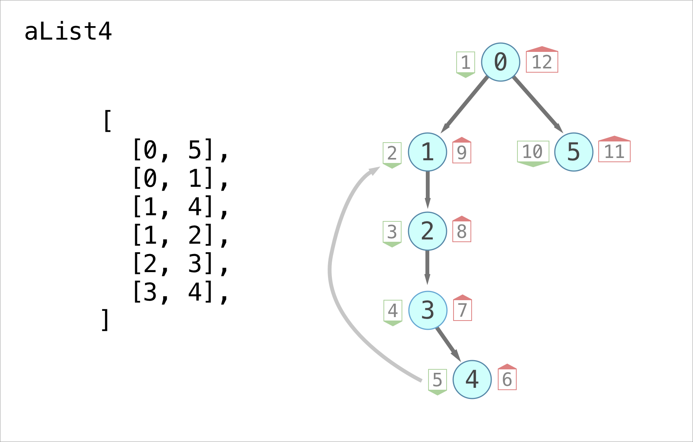

Ajacency Lists in Javascript
I have been reading through the Algorithm Design Manual. In order to get a deeper understanding of the graph algorithms in Chapter 5, I decided to reimplement them in Javascript. Checkout the github repo here.
All the graph algorithms in Chapter 5 center around a data structure called the Adjacency List. An Adjacency List stores a graph in an array of linked lists. Every index in the array corresponds to a vertex on the graph and every node in the linked list corresponds to an edge. The algorithms are hard to understand without examples so here are some illustrated examples of the different inputs for the test cases:






The numbered white squares correspond to the ordering of the edges. And here is another test input from figure 5.12:

The green numbers are entry times and the red numbers are exit times.
The Adjacency List implementation is mostly faithful to the book but some simplifications have been made. For example because this is not C I don't initialize the arrays I use with values.
You can find the implementation here and the tests here. Run the tests by following these steps in your terminal:
git clone https://github.com/zindlerb/javascript_adjacency_list
cd javascript_adjacency_list
npm install
npm run test